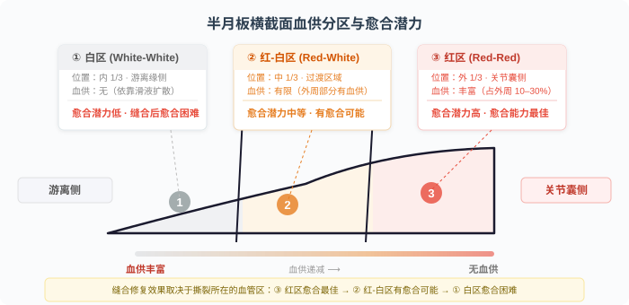

| 阶段 | 核心目标 | 屈膝限制 | 负重限制 |
|---|---|---|---|
| 0-2周 | 保护缝合处、消肿、肌力激活 | 被动 ≤ 90° | ❌ 严格不负重 |
| 2-4周 | 维持活动度、继续肌力训练 | 被动 ≤ 90° | ❌ 严格不负重 |
| 4-6周 | 逐步增加屈膝角度、开始负重 | 被动 ≤ 110°（后角缝合≤90°） | ⚠️ 足尖点地→部分负重(25%) |
| 6-8周 | 逐步恢复行走 | 主动 110° 被动 120° | 部分负重→全负重 |
| 8-12周 | 力量重建、本体感觉 | 全范围（避免深蹲≥90°） | ✅ 全负重 |
| 12周+ | 功能训练→回归运动 | 全范围 | ✅ 全负重 |
| 阶段 | 核心目标 | 屈膝目标 | 负重 |
|---|---|---|---|
| 0-1周 | 消肿止痛、初步活动 | 被动 90° | ✅ 可耐受完全负重 |
| 1-2周 | 恢复活动度、激活肌力 | 主动 90° 被动 110° | ✅ 逐步脱拐 |
| 2-4周 | 恢复正常行走、闭链训练 | 主动 110° | ✅ 全负重 |
| 4-6周 | 力量训练 | 全范围 | ✅ 全负重 |
| 6-12周 | 功能训练、低冲击运动 | 全范围 | ✅ 全负重 |
| 12周+ | 回归运动（避免高冲击） | 全范围 | ✅ 全负重 |